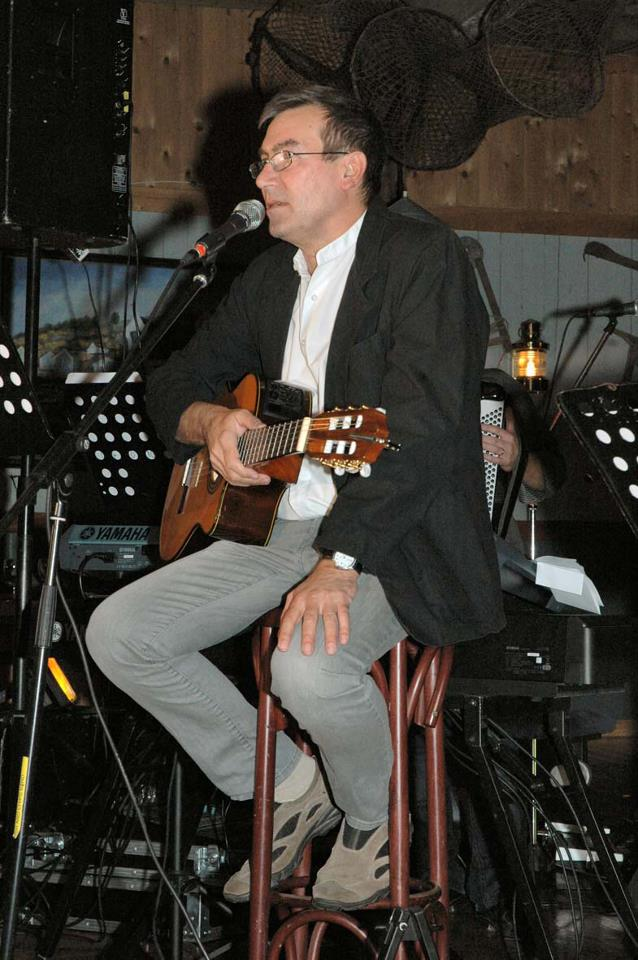

Minneord:
Ove Borøchstein (1949-2013)
Det var riktignok en ventet nyhet at min gode venn og forfatterkollega Ove Borøchstein skulle dø – og likevel var det som en bit av himmelen falt ned og verden ble et litt mørkere sted å leve i da det skjedde. Han ble 63 år gammel.

Vi hadde alt fått nyheten om hans kreftsjukdom, men det var som om det var umulig at dette skulle skje så fort som det gjorde. I Kristiansund var det jo som om han var en del av selve det kulturelle landskapet i byen.
Han hadde for kort tid siden også akkurat blitt nesten nabo med meg i Karihola. Hadde derfor døden bare tatt seg bedre tid, så hadde vi kanskje fått oss en siste prat, om bøker, om musikk, eller om til og med flere ting – og da vet jeg at han ville snakket som om vi begge skulle leve evig og at framtida ville være fulle av prosjekter og kultur.
Forfattere vokser ikke akkurat på trær i vår by, så bare den tingen alene gjorde oss til venner – og mer enn det. At jeg var den eldste av oss, om enn med ikke så mange år, gjorde riktignok at vi musikalsk hadde våre viktigste røtter i hvert vårt tiår, men det gjorde ikke så veldig mye.
Hvor kjent Ove var utenfor hjembyen og Nordmøre, det vet jeg egentlig ikke så mye om, men for de som ikke har stiftet bekjenskap med hans kunst er det jo ikke for seint. Både bøker og musikk eksisterer. Men for meg var han ikke kun forfatter og teatermenneske – han var en varm og hyggelig person jeg både kjente og følte samhørighet med.
Jeg har likt godt veldig mye av den musikken han har skrevet og sunget inn på plate/CD. Som forfatter rakk han å skrive fem romaner for ungdom og tre lokalhistoriske bøker, deriblant Kæm, ka, kor og ka’ti, Spørreboka om Kristiansund (1998) og J: Historien om Kristiansundsjødene (2000).
Denne siste er anmeldt1 på min hjemmeside. Han har dessuten også en gjesteartikkel2 her hos meg.
Vi var ikke daglige omgangsvenner, men vi hadde likevel et godt vennskap og ikke minst stor respekt for hverandre.
Med Oves død har jeg altså mistet en god forfatterkollega i en by som har fostret mange musikere, men ganske få forfattere, Ove greide faktisk å kombinere begge deler. Han var både musiker, låtskriver og forfatter. Blant annet skrev han musikk for sin fetter Jahn Teigen.
Jeg skammer meg ikke det minste over at jeg ikke greide å holde tårene tilbake da jeg hørte hørte en av sangene hans på lokal-TV i dag.
En rett og slett veldig typisk Borøchsteinsk sang, med en melodi og en tekst som gikk rett til både hjerte og hjerne.
I minnet vårt vil du leve lenge, lenge, Ove!
Fotnoter:
- Anmeldelsen av J: Historien om Kristiansundsjødene finner du her: forfatter.net/knudtsen/artikler/2000/krsundjoedene.shtml | ↩
- Gjesteartikkelen til Ove Borøcstein er her: forfatter.net/knudtsen/gjester/2001/gjest-ove-0401.shtml | ↩